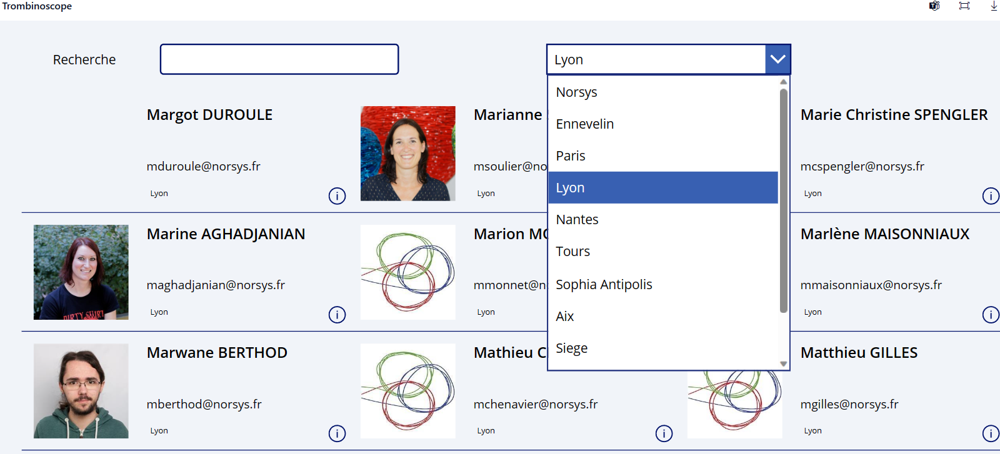
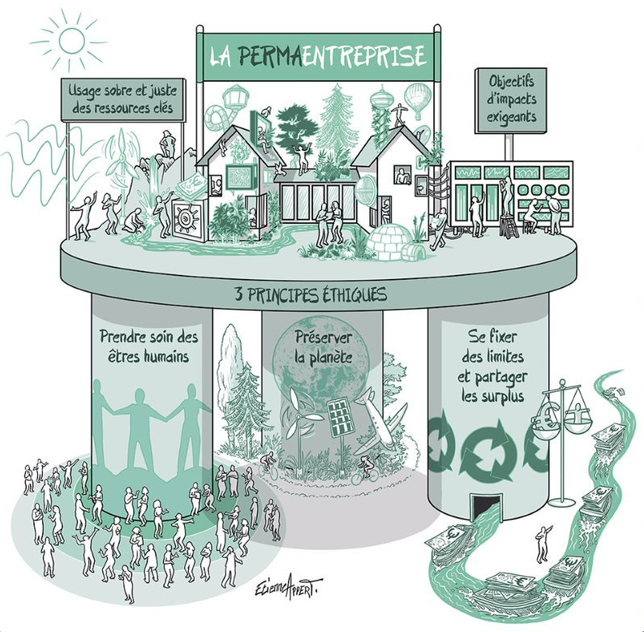
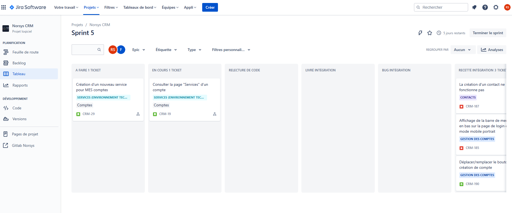

Je m'appelle Romain SIEURIN, j'ai 19 ans et je suis passionné par l'informatique, le voyage et la musique.
Je suis ravi de vous accueillir ici pour partager avec vous les résultats de mes six semaines de stage
d'informatique au sein de Norsys. À travers ce site, j'ai l'opportunité de vous présenter mes réalisations
et les compétences que j'ai acquises durant cette période enrichissante.
Norsys
Norsys est une entreprise de services du numérique (ESN) créée en 1989 et basée en France.
Elle est spécialisée dans le conseil en technologies, le développement de logiciels et les solutions
digitales. Norsys compte parmi les leaders du marché français des services informatiques, avec
une expertise reconnue dans plusieurs secteurs.
Expertise et services proposés par Norsys
Norsys offre une large gamme de services, notamment le développement d'applications web et
mobiles, la gestion de projets informatiques et la transformation digitale des entreprises.
L'entreprise se distingue par son expertise dans les technologies telles que Java, .NET, JavaScript,
Python, ainsi que dans les frameworks et les outils associés. Norsys accompagne ses clients
dans la conception, la réalisation et la maintenance de leurs solutions informatiques, en mettant
l'accent sur l'innovation et la qualité.
Valeurs et engagement de Norsys
Norsys met l'humain au cœur de ses préoccupations, tant du côté de ses collaborateurs que de ses
clients. L'entreprise favorise un environnement de travail inclusif et encourage
l'épanouissement professionnel de ses équipes. Norsys attache une grande importance à la proximité avec
ses clients, en cherchant à comprendre leurs
besoins spécifiques et à leur apporter des solutions sur mesure. En tant qu'acteur responsable,
Norsys s'engage
dans une démarche de développement durable, en mettant en place des actions concrètes pour réduire son
empreinte
écologique et favoriser la transition vers une économie plus respectueuse de l'environnement.
Norsys adopte une approche organisationnelle unique qui se distingue par
l'absence d'organigramme
traditionnel. Contrairement aux structures hiérarchiques conventionnelles, Norsys privilégie
l'égalité et place
tous les employés de l'entreprise sur un même pied d'égalité. Cette philosophie organisationnelle se
reflète dans
la façon dont Norsys attribue les primes et les récompenses. Lorsqu'une prime est décernée à une
équipe, elle est
uniforme pour tous les membres, indépendamment de leur position dans la hiérarchie de l'entreprise.
Cette approche
garantit l'équité et l'inclusion au sein de l'entreprise, en reconnaissant la valeur et les
contributions de chaque
individu, quel que soit son niveau hiérarchique. En favorisant une culture d'égalité et en évitant
les distinctions
hiérarchiques rigides, Norsys encourage la collaboration, la coopération et le partage des
connaissances entre
tous ses employés. Cette approche horizontale renforce l'esprit d'équipe et permet à chaque individu de
s'investir
pleinement dans les projets et les objectifs communs de l'entreprise, en valorisant leurs compétences et
leur
expertise. Il en va de même pour la présentation du trombinoscope, comme on peut le voir sur la photo
suivante :

La permaentreprise chez Norsys est un concept novateur qui
consiste à offrir à ses collaborateurs un contrat à
durée indéterminée dès leur intégration. Cela signifie que dès le début de leur carrière au sein de
l'entreprise, les
employés bénéficient d'une stabilité d'emploi et d'un engagement à long terme. Cette approche vise à
favoriser la
fidélisation des talents, le développement professionnel et la construction de relations durables avec
les
collaborateurs. La permaentreprise incarne l'esprit d'engagement et de confiance mutuelle entre
Norsys et ses
employés.

“ Concevoir avec une préoccupation humaine et éthique des usages du numérique efficaces afin de contribuer à
l’évolution positive du monde ”
Mes collègues
Dans la partie "Mes Collègues" de mon portfolio, je présente tous les collègues et intervenants qui ont été
présents pendant mon stage chez Norsys. Cette section permet de mettre en avant les personnes avec lesquelles
j'ai eu
l'opportunité de travailler et de collaborer.
Chaque collègue est présenté avec sa photo et une brève description de son rôle au sein de l'entreprise
Norsys. Je mentionne leur expertise, leur contribution au projet et leur implication dans les différentes
tâches et
responsabilités. Cette partie vise à mettre en valeur la diversité des profils professionnels et des
compétences présentes dans l'entreprise.
En fournissant ces informations, je souhaite donner aux visiteurs de mon portfolio une idée plus précise de
l'équipe avec laquelle j'ai eu la chance de travailler et des différents rôles qui ont contribué à la réussite
du
projet.
Arnaud ROUSSET
Arnaud est Product Owner (PO), il se charge de rédiger les US ou tickets qu'il insère ensuite dans
l'outil JIRA, ou les employés se repères pour
savoir sur quoi chacun est en train de travailler.
Sebastien OGE
Sebastien est chef de projet du CRM, c'est le Scrum Master. c'est lui est est en charge de livrer le
projet dans les temps, de s'assurer que le CRM correspond à
la demande du client. C'est en somme lui est est responsable du bon déroulement du projet.
Michael GIRY
Michael est le référent technique du projet, c'est en quelque sorte un dev leader. Avec sa grande
expérience et ses compétences, c'est lui qui est en charge de la partie code du projet. C'est lui qui
guide et
aide les stagaire et alternant dans leur tâches.
Arnaud PANSE
Arnaud est en charge de la gestion des divers projets, assurant ainsi la coordination, la planification
et la
supervision de leur déroulement. Il exerce un rôle essentiel dans l'organisation et la conduite des
initiatives, en
veillant à l'alignement des objectifs et à la mobilisation des ressources. Il ne developpe pas sur les
projets.
Flavio HENRIQUES
Flavio est en stage de deuxième année de bachelor informatique. Ayant un niveau plus expérimenté il a pu
m'accompagner et m'aider sur beacoup
de tâche lors de mon arrivée et puis par la suite sur le projet CRM.
Margot DUROULE
Margot est une stagiaire en Ressources Humaines dans l'entreprise, c'est elle qui me l'a présentée. Elle
m'a également donné les droits d'accès
interne sur l'espace numérique de l'entreprise.
Hinda TALARON
Hinda est une ingénieure informatique spécialisée en Java. Elle à intégré Norsys la deuxième semaine de
mon stage. La collaboration avec Hinda a été une véritable valeur ajoutée à mon parcours, me permettant
de renforcer mes connaissances et de me préparer efficacement à relever de nouveaux défis dans le
domaine du
développement logiciel.
JEREMY CROSBY
Jeremy est un alternant en bachelor informatique, il télétravaille en collaboration avec Flavio et moi
sur le projet CRM.
Domaines de compétences
Bienvenue dans la section "Compétences" de mon portfolio ! Ici, vous trouverez un aperçu de mes compétences
dans différents langages de programmation. J'ai pu acquierir durant le stage deux nouveau language : Le Java
et Angular
. Et puis dans une seconde section j'ai détaillé mon expertise dans des langages tels que Python,
JavaScript et bien d'autres. Explorez cette section pour en savoir plus sur mes connaissances et mes capacités
dans
chaque langage. En fin de section vous avez la possibilité de télécharger mon Curriculum Vitae pour en savoir
davantage
sur mon profit.
Language acquis durant le stage
Angular
Mon stage en informatique m'a permis de développer mes compétences en Angular, un langage de
développement web. J'ai
pu plonger dans le développement front-end, créer des applications interactives et explorer les
multiples
fonctionnalités d'Angular, notamment à travers mon projet CRM. Cette expérience m'a enrichi en termes de
maîtrise des
technologies web modernes et m'a permis d'adopter une approche structurée dans la création de sites web.
Java
Mon stage en informatique m'a permis de renforcer mes compétences en Java, un langage de programmation
essentiel
dans le développement logiciel. Grâce à l'utilisation d'InteliJ et à mon implication dans le projet CRM,
j'ai pu
acquérir une expérience pratique, développer des fonctionnalités avancées et améliorer ma compréhension
des bonnes
pratiques de développement en Java. Cette expérience enrichissante a ouvert de nouvelles perspectives
pour la
création d'applications professionnelles.
Language acquis avant le stage
HTML
58%
CSS
35%
JAVASCRIPT
30%
PHP
50%
C#
20%
PYTHON
60%
Outils
Bienvenue dans la partie "Outils" de mon portfolio ! J'ai regroupé içi tous les outils que j'ai utilisés au
sein de
l'entreprise Norsys.
Ces outils sont organisés par catégories pour faciliter la navigation. Je suis enthousiaste de vous inviter à
explorer ces sections.
Dans cette partie, je présente tous les outils et applications que j'ai utilisés pendant mon stage. Vous
pourrez découvrir les différentes technologies, logiciels et ressources qui ont accompagné la réalisation de
mes
projets et l'accomplissement de mes tâches. En parcourant cet espace, vous en apprendrez davantage sur les
outils qui ont
facilité mon travail quotidien chez Norsys.
Chaque outil est soigneusement détaillé, mettant en évidence les défis que j'ai rencontrés, les solutions que
j'ai mises en place et les résultats que j'ai obtenus. J'espère que cette présentation de mon parcours
professionnel vous
inspirera et vous donnera un aperçu de mes compétences en développement web.
Aperçu d'un site web moderne avec un design épuré et une mise en page responsive
Teams est une plateforme de communication et de collaboration développée par Microsoft, et elle joue
un rôle essentiel
chez Norsys et dans de nombreuses entreprises. En tant qu'outil centralisé, Teams permet aux équipes
de communiquer,
de partager des fichiers, de planifier des réunions et de collaborer en temps réel. Chez Norsys, Teams
favorise la
communication fluide entre les équipes internes et externes, facilite le partage d'informations et la
résolution des
problèmes. Grâce à ses fonctionnalités telles que les appels audio et vidéo, les discussions
instantanées et les
espaces de travail dédiés aux projets, Teams améliore la productivité, la coordination et la cohésion
au sein de
l'entreprise. De plus, il permet l'intégration d'autres outils et services, offrant une expérience de
travail complète
et unifiée.
Aperçu d'un site web moderne avec un design épuré et une mise en page responsive
L'intranet de Norsys est une plateforme interne accessible uniquement aux employés de
l'entreprise. Il s'agit d'un outil
centralisé qui regroupe diverses informations et ressources essentielles pour le fonctionnement de
l'entreprise. En tant
qu'outil important, l'intranet permet aux employés de trouver rapidement des documents, des
procédures et des politiques
internes, favorisant ainsi la transparence et la cohérence au sein de l'organisation. On trouve
par exemple des annuaires
d'employés, des calendriers d'événements, des actualités de l'entreprise et bien plus encore... De
plus, il facilite la
communication interne en offrant des espaces de partage d'informations, de collaboration et de
discussion entre les
différentes équipes. L'intranet de Norsys joue un rôle clé dans la gestion des connaissances et la
diffusion
d'informations importantes, contribuant ainsi à l'efficacité et à la productivité de l'entreprise.
En clair l'intranet
de Norsys joue un rôle crucial dans l'entreprise en tant qu'outil centralisé pour l'accès aux
informations
et à la documentation internes.
Aperçu d'un site web moderne avec un design épuré et une mise en page responsive
Maven est un outil de gestion de projet largement utilisé dans les entreprises, y compris chez
Norsys. Il facilite la
construction, le packaging et la gestion des dépendances des projets logiciels. Maven permet de
standardiser et
d'automatiser les processus de construction, ce qui améliore l'efficacité et la cohérence du
développement. Chez
Norsys, Maven est utilisé pour gérer les dépendances des projets, garantissant ainsi une gestion
centralisée et
simplifiée des bibliothèques et des frameworks. Il facilite également la création de builds
reproductibles et la
génération de rapports détaillés sur les projets. Grâce à Maven, Norsys peut assurer une meilleure
qualité, une
meilleure maintenabilité et une meilleure gestion des versions de ses applications logicielles.
Aperçu d'un site web moderne avec un design épuré et une mise en page responsive
Git est un système de contrôle de version largement utilisé dans les entreprises, y compris chez
Norsys. Il permet de
gérer et de suivre les modifications apportées au code source d'un projet, facilitant ainsi la
collaboration et la
gestion des versions. Git offre un historique complet des modifications, ce qui permet aux équipes
de revenir en
arrière, de fusionner des branches de développement et de résoudre les conflits plus efficacement.
Chez Norsys, Git
est utilisé pour organiser et coordonner le travail des développeurs, assurant une meilleure
traçabilité des
modifications et une meilleure collaboration entre les membres de l'équipe. Il permet également de
gérer les
différentes versions d'un projet et de revenir à des états antérieurs en cas de besoin. Enfin, Git
offre une grande
flexibilité et une intégration fluide avec d'autres outils de développement, contribuant ainsi à
l'efficacité et à la
qualité du travail réalisé chez Norsys.
Aperçu d'un site web moderne avec un design épuré et une mise en page responsive
Node.js est un environnement d'exécution JavaScript côté serveur qui permet à Norsys de développer
des applications
web rapides et évolutives. Il repose sur le moteur JavaScript V8 de Google Chrome et offre un
modèle asynchrone qui
permet de traiter de nombreuses requêtes simultanément. Grâce à sa vitesse et à sa légèreté,
Node.js permet à Norsys
de créer des applications réactives en temps réel, des API performantes et des microservices.
L'utilisation de Node.js
permet également une meilleure harmonisation entre le développement côté client et côté serveur,
car JavaScript est
utilisé à la fois dans le navigateur et sur le serveur. De plus, l'écosystème de modules de
Node.js offre une vaste
gamme de bibliothèques et de frameworks prêts à l'emploi, ce qui accélère le processus de
développement chez Norsys.
Enfin, Node.js est extensible et permet à Norsys de développer des applications personnalisées
répondant à leurs
besoins spécifiques, tout en bénéficiant de la richesse de la communauté open source.
Aperçu d'un site web moderne avec un design épuré et une mise en page responsive
Docker Desktop est une plateforme de virtualisation légère qui permet de créer, gérer et exécuter
des conteneurs dans
un environnement de développement. Chez Norsys et dans de nombreuses entreprises, Docker Desktop
joue un rôle crucial
dans le déploiement d'applications et la gestion des infrastructures. Il offre un moyen cohérent
et reproductible de
mettre en place des environnements de développement, de test et de production, ce qui facilite la
collaboration entre
les équipes de développement et d'exploitation. Grâce à Docker Desktop, Norsys peut créer des
conteneurs isolés pour
chaque application, ce qui permet une gestion plus efficace des ressources système et une
meilleure sécurité.
L'utilisation de Docker Desktop permet également une mise à l'échelle facile et rapide des
applications, ce qui est
particulièrement important dans les environnements où la charge de travail fluctue. Enfin, Docker
Desktop facilite la
migration des applications entre les environnements de développement et de production,
garantissant une plus grande
portabilité et une réduction des erreurs liées à la configuration.
Aperçu d'un site web moderne avec un design épuré et une mise en page responsive
IntelliJ est un environnement de développement intégré (IDE) utilisé par Norsys et de nombreuses
autres entreprises.
C'est un outil essentiel pour les développeurs car il offre une large gamme de fonctionnalités
avancées pour faciliter
le développement de logiciels. Chez Norsys, IntelliJ permet aux développeurs de coder de manière
plus efficace grâce à
ses fonctionnalités telles que l'autocomplétion, la refactorisation de code, le débogage et la
gestion des
dépendances. L'IDE fournit également une intégration transparente avec les outils de construction
et de test, ce qui
simplifie les processus de développement et d'intégration continue. Grâce à sa compatibilité avec
de nombreux langages
de programmation, y compris Java, Kotlin et JavaScript, IntelliJ répond aux besoins de divers
projets chez Norsys.
Enfin, l'interface conviviale et personnalisable d'IntelliJ permet aux développeurs de travailler
de manière efficace
et ergonomique, améliorant ainsi leur productivité et leur expérience de développement.
Aperçu d'un site web moderne avec un design épuré et une mise en page responsive
GitKraken est un outil de gestion de version graphique qui facilite la collaboration et la gestion
des dépôts Git chez
Norsys. Il permet aux équipes de développeurs de visualiser et de gérer efficacement les branches,
les commits et les
conflits de fusion. Grâce à son interface intuitive et conviviale, GitKraken simplifie le
processus de développement
et améliore la productivité des développeurs chez Norsys. L'outil offre également des
fonctionnalités avancées telles
que la résolution visuelle des conflits et la possibilité de remonter dans l'historique des
modifications, ce qui
facilite le travail en équipe et la révision du code. En intégrant GitKraken dans leur flux de
travail, Norsys peut
assurer une collaboration harmonieuse, une meilleure traçabilité des modifications et une gestion
efficace des
versions de leurs projets. Enfin, GitKraken offre une intégration transparente avec des
plateformes de gestion de code
populaires telles que GitHub, Bitbucket et GitLab, ce qui permet à Norsys de travailler de manière
transparente avec
des dépôts distants et d'exploiter pleinement les avantages du développement basé sur Git.
Aperçu d'un site web moderne avec un design épuré et une mise en page responsive
DBeaver est un outil de gestion de bases de données multiplateforme, puissant et convivial. Pour
Norsys, DBeaver est
un outil important car il permet aux développeurs et aux administrateurs de bases de données
d'interagir avec
différentes bases de données de manière efficace et intuitive. Grâce à DBeaver, Norsys peut gérer
facilement et
efficacement ses bases de données, effectuer des requêtes, analyser les schémas de base de données
et visualiser les
données. L'interface conviviale de DBeaver facilite la navigation et l'exploration des bases de
données, ce qui permet
aux équipes de développement de gagner du temps et d'améliorer leur productivité. De plus, DBeaver
prend en charge de
nombreux types de bases de données, ce qui permet à Norsys de travailler avec différents systèmes
de gestion de bases
de données et d'assurer une compatibilité maximale. Enfin, DBeaver offre des fonctionnalités
avancées telles que la
gestion des connexions, la génération de scripts SQL et la collaboration, ce qui en fait un outil
complet et
polyvalent pour les besoins de gestion de bases de données de Norsys.
Aperçu d'un site web moderne avec un design épuré et une mise en page responsive
Udemy est une plateforme d'apprentissage en ligne qui offre une vaste gamme de cours et de
formations dans divers
domaines, y compris la technologie et le développement. Pour Norsys, Udemy est un outil important
car il permet aux
employés d'accéder à des cours en ligne de haute qualité pour développer leurs compétences et
rester à jour dans un
secteur en constante évolution. Grâce à Udemy, Norsys peut offrir à ses employés des opportunités
de développement
professionnel et de formation continue, ce qui favorise leur croissance et leur progression dans
l'entreprise. La
flexibilité et l'accessibilité des cours en ligne sur Udemy permettent aux employés de suivre des
formations à leur
propre rythme et selon leurs besoins spécifiques. De plus, Udemy propose des évaluations et des
certificats qui
peuvent servir de référence pour valider les compétences acquises par les employés.
Aperçu d'un site web moderne avec un design épuré et une mise en page responsive
Jira Software est une plateforme de gestion de projet et de suivi des problèmes qui permet à
Norsys d'organiser et de
gérer efficacement ses projets de développement. En utilisant Jira Software, Norsys peut créer des
tableaux de bord
personnalisés, des listes de tâches et des flux de travail adaptés à ses besoins spécifiques. Cela
facilite la
planification, le suivi et la gestion des tâches, des problèmes et des demandes de
fonctionnalités. Jira Software
permet également une collaboration transparente entre les équipes grâce à des fonctionnalités
telles que les
commentaires, les assignations et les notifications en temps réel. De plus, Jira Software fournit
des outils avancés
de génération de rapports et d'analyse des performances, permettant à Norsys de prendre des
décisions éclairées et
d'améliorer continuellement ses processus de développement. Enfin, Jira Software s'intègre
facilement avec d'autres
outils de développement couramment utilisés, favorisant ainsi une approche intégrée et cohérente
dans la gestion des
projets chez Norsys.

Aperçu d'un site web moderne avec un design épuré et une mise en page responsive
GitLab est une plateforme de gestion de code source basée sur Git, qui permet à Norsys de
collaborer efficacement sur
des projets de développement. Il offre un ensemble complet d'outils pour la gestion de versions,
le suivi des
problèmes, l'intégration continue et le déploiement automatique. En centralisant le code source et
les activités de
développement, GitLab permet à Norsys de bénéficier d'une traçabilité complète et d'une
collaboration transparente
entre les équipes. Il facilite également la revue de code, la gestion des branches et des
fusionnements, et fournit
des fonctionnalités de gestion des pipelines d'intégration continue. En outre, GitLab offre une
grande flexibilité en
permettant l'hébergement du code source sur des serveurs locaux ou dans le cloud, ce qui répond
aux besoins de
confidentialité et de sécurité de Norsys. Enfin, grâce à son interface conviviale et ses
nombreuses fonctionnalités,
GitLab améliore la productivité des équipes de développement chez Norsys en rationalisant les
processus et en
favorisant la collaboration.
Blog
Bienvenue sur la partie blog de mon portfolio ! Ici, vous trouverez un aperçu simple et rapide de tout ce que
je fais chaque jour. Découvrez mes expériences, mes projets et mes réflexions au fil de mes deux mois de
stages chez Norsys